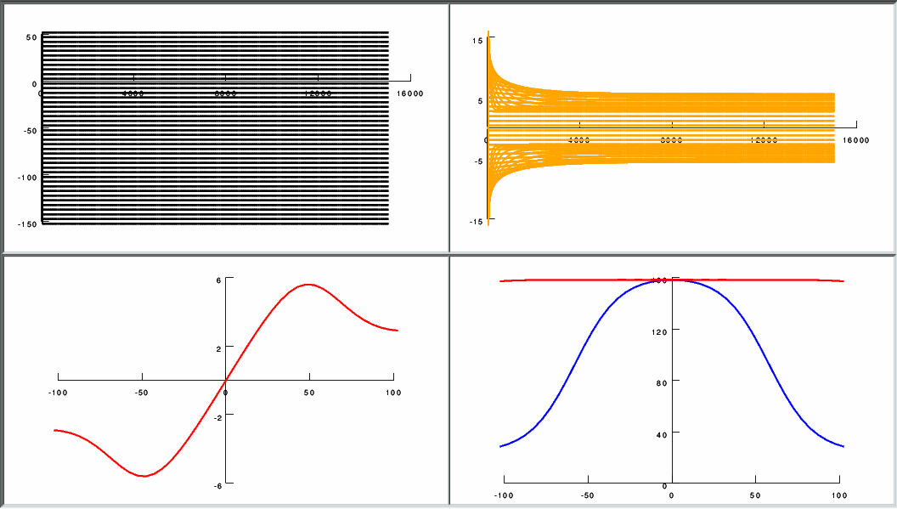

This is the readme for the model associated with figure 3 from the paper:
Appukuttan, S., Sathe, R., & Manchanda, R. (2016, January). Influence of gap junction subtypes on passive and active electrical properties of syncytial tissues. In Systems in Medicine and Biology (ICSMB), 2016 International Conference on (pp. 128-131). IEEE.
http://dx.doi.org/10.1109/ICSMB.2016.7915104
This model was contributed by Shailesh Appukuttan. It is written in the NEURON simulator which is freely available from
http://neuron.yale.edu
If you need more help than given below in running the simulation please consult this page:
https://senselab.med.yale.edu/ModelDB/NEURON_DwnldGuide.cshtml
Usage:
------
Auto-launch from modeldb (if NEURON installed and the browser is configured) or download and extract the archive and start with a command like
nrngui mosinit.hoc
on unix/linux, or start the init.hoc file on mswin or mac os x.
The simulation launches automatically. After a minute the simulation completes
and a figure with data associated with figure 3 in the paper is displayed:
